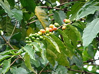

Vrste Kave:
1. Coffea arabica izvira iz Etiopije in je najpomembnejša gospodarska vrsta. Predstavlja kar okrog 90 % vse pridelane kave na svetu. Ta vrsta kave ima najkakovostnejša zrna, danes pa so najbolj cenjena zrna iz Kenije in Tanzanije.
2. Coffea robusta že samo ime pove, da je ta vrsta kave najbolj odporna in najmanj občutljiva. Izhaja iz Kenije, zanimivo pa je dejstvo, da vsebuje od 40 do 50 % več kofeina od arabike. Žal pa je zaradi svojega bolj grenkega okusa in bolj neizrazite arome manj cenjena in tudi cenejša od arabike.
3. Coffea liberica izvira iz Liberije. Ker ni najboljšega okusa, ne preseneča, da med predstavljenimi tremi vrstami zavzema najmanjši delež v prodaji.
